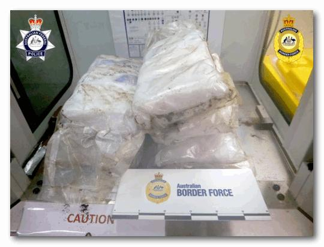
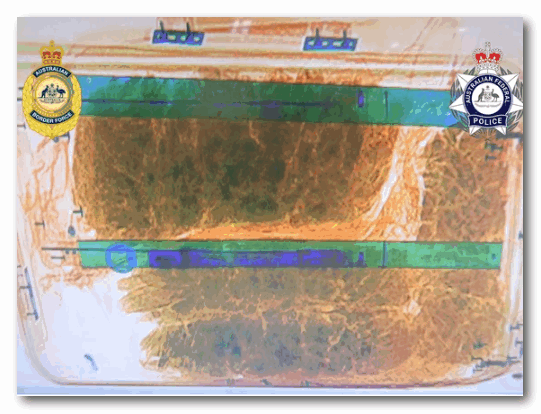
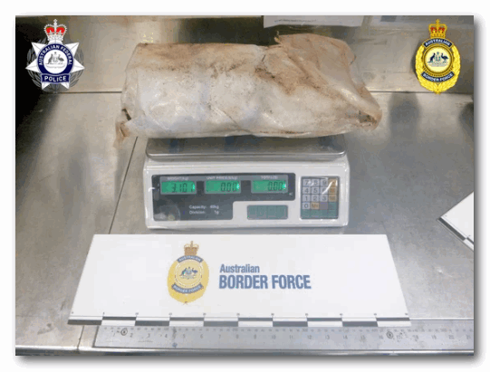

近日，一名加拿大女子在澳大利亚机场被逮捕，原因是在她的行李中发现了价值 $1200万的冰毒。尽管她想尽办法阻止被查出：她将冰毒装在了塑料袋中，用浸过醋的毛巾包裹着，毛巾上还铺着咖啡豆。
据澳大利亚官员表示，这个行李箱是从温哥华运出的。这一发现进一步证明，加拿大是针对澳大利亚毒品泛滥的重要来源国，在澳大利亚街头毒品的零售价格更高。
澳大利亚当局未透露这名24岁加拿大女子的姓名，她从温哥华出发后，又乘坐从斐济起飞的航班抵达布里斯班国际机场。
7月28日，她抵达布里斯班后，被送去接受行李检查。行李箱扫描结果显示内部有异常。

据澳大利亚边境部队(ABF)称，里面发现的几个包裹都被厚厚的塑料包装包裹着，然后用浸泡在醋中并铺有咖啡豆的毛巾包裹着。
这种奇怪的包装很可能是为了掩盖非法货物的气味，以防受过缉毒训练的缉毒犬发现违禁毒品。
官员们表示，对这些物品进行现场检测后，推测其含有甲基苯丙胺，重量为 14.4 公斤。
澳大利亚联邦警察(AFP)随后指控该指控该女子一项进口商业数量的边境管制毒品的罪名，这一罪行最高可判处终身监禁。
警方表示，该行李箱中的冰毒足够进行近 145,000 次街头交易，估计零售价为 1,340 万澳元，约合 1,200 万加元。

“我很高兴地说，在这次事件中，澳大利亚联邦警察和边境部队阻止了大量甲基苯丙胺流入我们的街道，”澳大利亚联邦警察代理侦探长Steve Wiggins在一份声明中说。“澳大利亚联邦警察及其澳大利亚和国际合作伙伴正在不遗余力地追捕那些试图将非法毒品带入这个国家的人。”
澳大利亚毒品管理局局长John Ikin说，澳大利亚正面临进口毒品浪潮，尤其是甲基苯丙胺，也就是冰毒。
Ikin说:“这一结果是对犯罪分子的一个警告，无论你试图将毒品进口或运输到哪里，边防局和我们的合作伙伴都会严密监视你。”
加拿大人和加拿大经常出现在澳大利亚的大量非法毒品缉获行动中，并被指控为走私计划的主谋。
据Postmedia今年早些时候的一项调查显示，最大的一批毒品缴获量（按吨计算）是由有组织犯罪集团从温哥华港通过海运方式运送的。
其中大部分从墨西哥运往加拿大，然后隐藏在常规商业货物中驶往澳大利亚和新西兰。从加拿大运来的毒品比直接从墨西哥或南美运来的更少引起警觉。冰毒在澳大利亚的销量比在加拿大要高几个数量级，因为需求旺盛，而且进口到这个岛国的门槛很高。
与加拿大最大的关联是对Tse Chi Lop的指控，这位加拿大人被控经营着一个价值数十亿的庞大冰毒帝国。他被指控为世界上最大的毒枭之一，也是墨西哥强大的Sinaloa Cartel贩毒集团的创始人。这名前多伦多男子正在澳大利亚接受审判。
然而，毒品仍以多种方式进入澳大利亚，包括邮寄和藏在乘飞机和船抵达的加拿大旅客的行李中。
11月，一名加拿大男子因试图走私价值1500万的冰毒在澳大利亚被判处18年半监禁，他是在澳大利亚被捕的几名加拿大人之一。
去年夏天，有工作人员在一个从加拿大运往悉尼的廉价木柜的隐藏隔间内，发现了价值近5000万的冰毒。今年5月，一名加拿大人在澳大利亚被判处11年监禁，原因是在从多伦多运往墨尔本和悉尼的商业面团搅拌机中发现了大量冰毒。
去年，澳大利亚当局宣布，该国已知最大的一批芬太尼从加拿大运抵澳大利亚，藏匿在一辆从温哥华运来的一台工业车床中。
此外，警方还发现一辆用集装箱从加拿大运往悉尼的老式宾利豪华轿车内藏有大量可卡因和冰毒，价值约 1.35 亿。
图片：澳大利亚边境部队提供